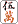
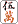

レートが大きければ真剣になるわけではない。千点１万円だろうが、金持ちならば大したことはない。真剣ではなく、マジになるだけの話。
昔は、真剣に打つためには「知らない土地へ行って鉄砲（＝無一文）で打て」などど言う人もいた。実際、阿佐田哲也もそんなことを書いていた。負けたらただでは済まない状況で打ってはじめて、人は真剣になる。
アイデンティティーを賭けて闘うとき、本来の自分との対話が始まるのだ。窮地で知る。身につけたことの少なさ。自分の弱さ。信じていることのすべて。そして、自分が本当に愛しているものを−。
さて当日のルールを記しておこう。
○ルール概要
・一般のありありルール（喰いタン,後付け,一発裏ドラ,槓ドラ,槓裏ドラ有り）
・赤牌なし。
・途中流局一切なし。
・３万点持ちの半荘戦（西入なし）
順位点（１６ポイント加減方式）
１位 ２位
３位 ４位
１人浮き ＋１６ −２ −４ −１０
２人浮き ＋１２ ＋４ −４ −１２
３人浮き ＋１０ ＋４ ＋２ −１６
・ラス親のあがり止めなし。箱割れ終了なし。ダブロンなし。
なお、勝負は６回戦のトータルプラマイで評価。
いよいよ対局開始。あばらの辺りにピリピリと緊張感が走る。横隔膜が少し持ち上がる感じだ。
ついに、この日が来た。緊張感が心地よい。叶うなら、ツイていてくれ。
（下記、データ部分では敬称を略させていただきますm(_)m）
●第１回戦 起家・財前 Ｋ場 別人 Ｈ和
○東１局０本場 ドラ
配牌を取る。４枚ツモるごとに牌を立てていく。字牌がやけに多く、対子がない。
アガるのが難しそうだ。面子候補の中張牌が少ない。役牌の重なりに期待しつつ、オタ風も含めて字牌を中盤まで引っ張り気味にし、安全牌を抱えていつリーチがかかっても困らないように。
また翻牌を鳴いて、安全牌を打ちながら向聴を減らしていく打ち方をしよう。親とはいえ、クイタンを狙っていくにはかなり無理がありそうだ。場は穏やか。オタ風、翻牌、ヤオ九牌・・・副露もなく、ゆっくりとした展開。 みな、タンピン志向か。
１３巡目。Ｈ和さんが ツモ切りでリーチ。 ツモ切りでリーチ。
来た。メンピンドラ１クラス、タンヤオもついているか。安全牌を切りながら前に進むことができる。降りるのはかなり楽。別人さんもハナから勝負に来ていない。
３人とも、見るべきは「草場さんがどう打ってくるか」の一点。たとえば無筋の不要牌をバンバン通してくる。どんな手で前に出てきたのか。筋やワンチャンスを頼りに手を回してくるなら要注意。手がある程度進んでいるようだから追っかけリーチの可能性もありそうだ。それならば、最終結果は予想しにくい。果たしてどう来るか。
場に索子が安く、リーチの現物は５索だけ。場には ２枚、 ２枚、 １枚、 １枚、 ２枚、 ２枚、 が１枚見えている。 が１枚見えている。
このとき、Ｋ場さん手牌は、ピンフドラ１の１向聴。
      ツモ 打 ツモ 打
次巡 ツモ 打 打
以後、ベタオリ。
牌を内側に寄せて中張牌を貯め込んでから手牌を整理していき、辺張より嵌張、嵌張より両面という具合か。ならばそうそう三色は狙えない。人より早く両面待ちで聴牌したときだけリーチがくるのか。ということは、ドラの枚数がわかれば手の値段が読めそうだ。
それはいいとしても、リーチが来るまでは明らかに手を育てていた。リーチされたら即オリ。これではとうていＫ場理論とは言えない打ち方。何故だっ！。
３人がだいたい同じリズムで摸打が進行し、Ｋ場さんのところでストップする。リーチが入ると腕組みをし、現物以外を選択するときはほぼ毎回長考となる。
長考は迷い。先を予想し、ツモ牌に対してどう打つかをあらかじめ考えていることが必要とされるのが麻雀。長考こそ、ほぼ確実に打ち手レベル把握のバロメーターなのである。
Ｈ和の手
    
流局（一人テンパイ）
様子見とはいえ、一触即発。
○東２局１本場 ドラ 親（Ｋ場） 親（Ｋ場）
南家の別人さんがリーチ
捨て牌      
高い手役なら恐いのは１２３の三色同順。ならば先打の や、 は嫌なところ。は手出しだったから や、 は嫌なところ。は手出しだったから はある。他には・・・。ドラそばが出ていないのが気になる。雀頭か暗刻か順子で使っているか。おハコの七対子もあり得るが、そうなると待ちは絞れない。 はある。他には・・・。ドラそばが出ていないのが気になる。雀頭か暗刻か順子で使っているか。おハコの七対子もあり得るが、そうなると待ちは絞れない。
七対子は入門書に書いてあるパターンが比較的多いもの。すなわ中張牌のバラ切りから、２枚切れの牌に合わせるように出て、中盤になると筋引っかけになる牌や字牌で待つ。あるいはドラ単騎。
七対子は最大限でもあがり牌が３枚しかないから、ドラ以外では誰もが出やすい待ちをしたくなる（相手の危険牌の単騎待ちにするときは別）
たくさん捨ててある色。引っかけ。ワンチャンス。ノーチャンス。地獄待ち。だからこそ七対子丸見えのとき、敢えて無筋で待つのがセオリーとも言われている。
相手に使われ出てこない牌で待つとあがれない。いかにも待ち頃の牌はかえって握り潰される危険がある。この場合、七対子のリーチは、追いかけられて死亡宣告を受けてしまう。では、どうするか。論理的な解答はわからないが、別人さんは「待ち頃の牌の陰でついつい注意を怠ってしまうような、いわば気配のない牌」でひっそりと待つ。
普通の手でも七対子風味の捨て牌が多く、逆に七対子のとき、間４ケンやダブル搭子落としを匂わせるような切り方をする。
「麻雀の基本は１雀頭４面子。七対子は便利な特殊役」、普通はこう考える。しかし、別人さんは言われる。「特殊役ではない。１雀頭４面子と同格の存在」と。
さて、この局。別人さんの手牌。
メンピンドラドラ。５巡目の打ちで気配を消している。ケレンのない打ち筋。一打一打に細心の注意が行き渡っている。
昔、迷彩とか作り聴牌とか言われる技術がもてはやされたことがあった。索子を２面子捨て牌に並べて、６７８の三色同順、嵌待ちだったりする。ホントはとっくにあがっているはず。他の人は何をしていたのか。
いろいろな待ちの可能性を感じさせ、待ちや手役を読まれる捨て牌のキズを丁寧に消していく技術。しかし、あがったのは財前。切れない牌とはいえ、リーチに対してを暗槓。勝負！
「・・・居た」
供託リーチ棒２本を含め７５００点の収入。
 ツモ ツモ
○東３局０本場 ドラ
北家（Ｋ場）
１巡目 ツモ 打
２ ″

３ ″

４
５
６
わたしは軽い手。別人さんを警戒しつつ、チャンタ・中・ドラ１を聴牌。別人さんがリーチ。タンヤオ風味だから降りるならば楽だが。危険牌のを掴んできて、取り敢えずはその単騎待ち。と、そのをツモ。
   ツモ ツモ
○東４局０本場 ドラ
   ツモ ツモ
別人さんのアガリ牌を続けてツモあがって、楽な展開。K場さんは音なし。K場理論の影もない。しかし毎回ベタオリするから暴牌もない。
私としては満貫クラスが欲しいところ。副露主体に手を安くしながら、早くて軽いあがりをめざすトップ目は恐くない。安いことがわかればぎりぎりまで勝負され、振り込めば逆転可。 腰をためて、安全圏入りする満貫を見る一方、危険を察知すれば安くてもあがりにかける。それが理想。
怯えるあまり、自然にタンピン三色になる手をクイタンであがってはならない。あがったとき、手牌と捨て牌を見比べて、ツキの程度と腕が見透かされる。
○南場１〜４局
ノーテン罰符や２０００点程度のあがりで、望み通りの小場のまま、南４局へ。
オーラス、ラスめのK場さんの親。ちょっと浮きの北家・別人さんがゴットーをツモって終了。
終局：財前 +24.8 別人 +5.8 Ｈ和 -9.4 Ｋ場
-21.2
結局、Ｋ場さんはあがれなかったが、全くツキがなかったとは考えにくい。他の３人が聴牌で凌ぎを削っている状況で２向聴レベルから方向が定まらず、進めないという感じであった。
東場は相手のリーチが多かった。それにむやみに向かって行けというつもりはない。しかし状況無視でベタオリしてはチャンスをものにすることもできない。６半荘程度の短期決戦で麻雀の実力差が出るとしたら、一人だけ聴牌速度が明らかに劣る場合である。
３人にとって、この対局の最大のテーマはＫ場さんに勝つことにある。従って、トータルポイントでＫ場さんに負けない見通しがついたとき、初めて優勝争いが始まる。それまでは重い勝負が続く・・・。
ラスをＫ場さんの指定席にしたまま、トップを狙う展開は消耗が激しい。しかしＫ場さんは「負けてるときこそガンガン行く」という持論を捨てたようだ。いずれにしても安堵するには早いが、とりあえずは緒戦を勝つことができた。
しかし何故、Ｋ場理論を実践しないのか、未だに謎のままである。このまま進んでいきそうな気配。しかし２回戦からはＫ場さん以外の３人による勝負の様相を呈していく。
|